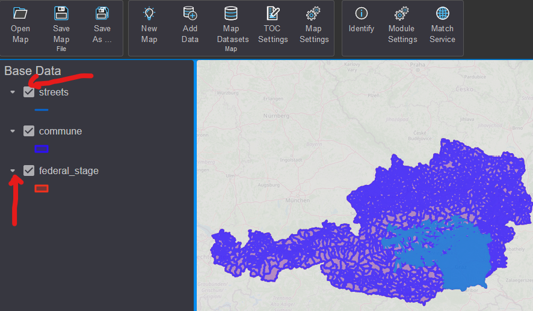

Daten hinzufügen¶
Beim Erstellen einer Karte müssen im ersten Schritt Daten hinzugefügt werden.
Dazu klickt man in der Werkzeugleiste auf den Button Add Data (bzw. auf den
Schnelleinstiegsbutton im TOC-Bereich).

Der Dialog ähnelt in der Navigation dem gView.DataExplorer. Anstelle der
Baumansicht des Data Explorers steht hier ein Kombinationsfeld Folder/Path zur
Verfügung. Der mittlere Teil des Dialogs entspricht dem Content-Bereich. Hier sind
allerdings im Gegensatz zum gView.DataExplorer nicht alle Kontextmenüs vorhanden. Zum Beispiel ist
zum Löschen und Umbenennen von Objekten immer der gView.DataExplorer zu verwenden.

Bei der ersten Anwendung müssen eventuell noch die Verbindungen zu Datenquellen eingestellt werden.
Wenn man beispielsweise PostGIS Daten einbinden möchte (empfohlen), muss man im Dialog zuerst in den Ordner Databases wechseln.
Dort gibt es den Unterpunkt PostGIS, unter dem alle gespeicherten Verbindungen zu PostGIS-Servern aufgelistet werden.
Sind noch keine Verbindungen vorhanden, kann über den + Button neben dem Folder/Path
Auswahlfeld eine neue Verbindung angelegt werden:
Bemerkung
Der Button steht nur Admin-Usern zur Verfügung. Carto-Usern stehen nur vom Admin bereitgestellte Verbindungen zur Verfügung.
Bevor die Verbindung übernommen wird, kann mit Test Connection noch überprüft werden,
ob alle Einstellungen richtig sind und eine Verbindung aufgebaut werden kann.
Ist die Verbindung erfolgreich erstellt worden, kann sie mit einem Doppelklick geöffnet werden.
Im Content-Bereich können Featureklassen oder ein Dataset ausgewählt und
danach der Dialog mit OK bestätigt werden. Damit werden die Daten der Karte hinzugefügt
und angezeigt:

Im TOC-Bereich können die Themen sichtbar bzw. unsichtbar gesetzt werden (Checkbox). Der Pfeil-Button bewirkt ein Aufklappen. Hierbei wird bei Vektordaten-Layern die Legende angezeigt:
